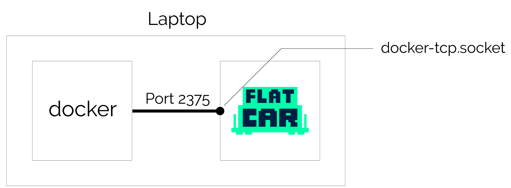
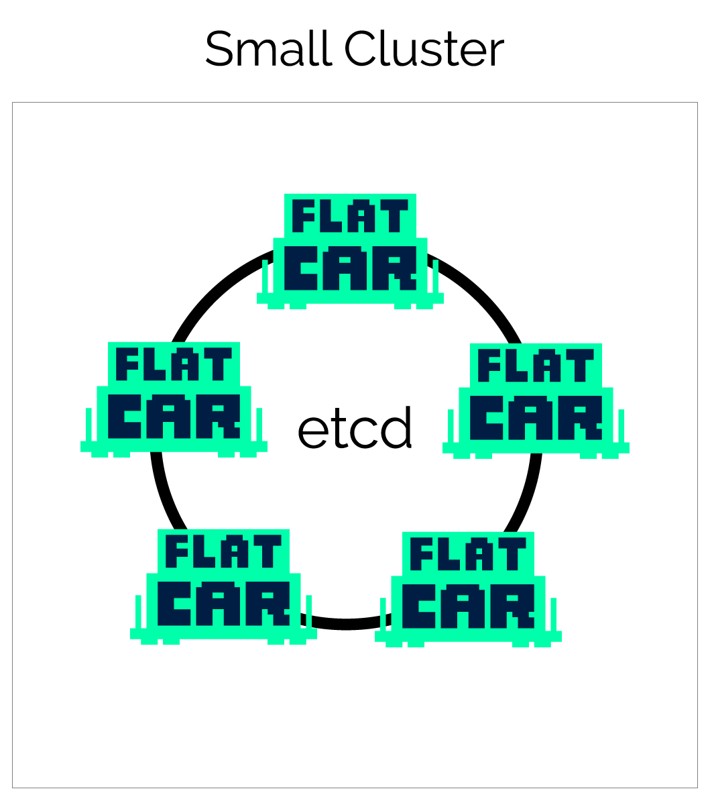
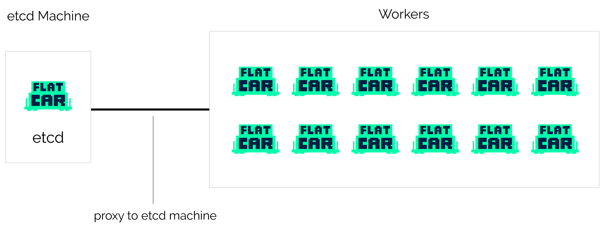
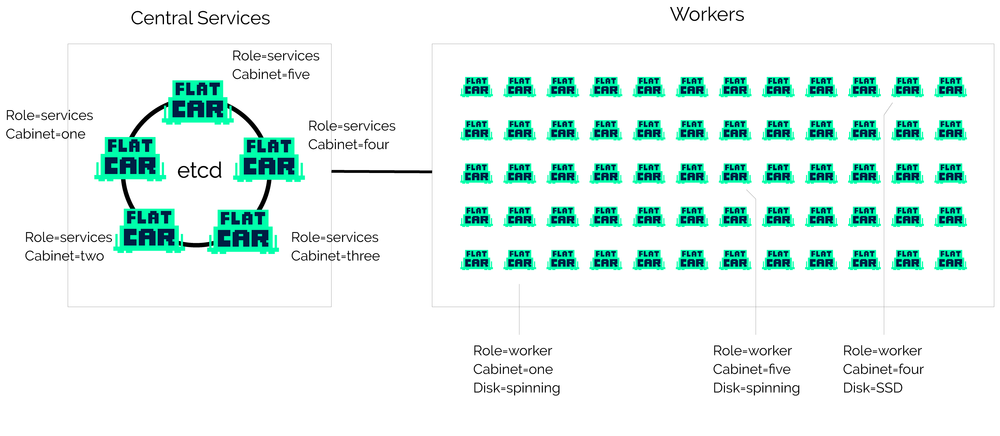

Flatcar Container Linux cluster architectures¶
Overview¶
Depending on the size and expected use of your Flatcar Container Linux cluster, you will have different architectural requirements. A few of the common cluster architectures, as well as their strengths and weaknesses, are described below.
Most of these scenarios dedicate a few machines, bare metal or virtual, to running central cluster services. These may include etcd and the distributed controllers for applications like Kubernetes, Mesos, and OpenStack. Isolating these services onto a few known machines helps to ensure they are distributed across cabinets or availability zones. It also helps in setting up static networking to allow for easy bootstrapping. This architecture helps to resolve concerns about relying on a discovery service.
Docker dev environment on laptop¶

| Cost | Great For | Set Up Time | Production |
|---|---|---|---|
| Low | Laptop development | Minutes | No |
If you're developing locally but plan to run containers in production, it's best practice to mirror that environment locally. Run Docker commands on your laptop that control a Flatcar Container Linux VM in VMware Fusion or Virtual box to mirror your container production environment locally.
Configuring your laptop¶
Start a single Flatcar Container Linux VM with the Docker remote socket enabled in the Container Linux Config (CL Config). Here's what the CL Config looks like:
systemd:
units:
- name: docker-tcp.socket
enable: yes
mask: false
contents: |
[Unit]
Description=Docker Socket for the API
[Socket]
ListenStream=2375
BindIPv6Only=both
Service=docker.service
[Install]
WantedBy=sockets.target
- name: enable-docker-tcp.service
enable: true
contents: |
[Unit]
Description=Enable the Docker Socket for the API
[Service]
Type=oneshot
ExecStart=/usr/bin/systemctl enable docker-tcp.socketThis file is used to provision your local Flatcar Container Linux machine on its first boot. This sets up and enables the Docker API, which is how you can use Docker on your laptop. The Docker CLI manages containers running within the VM, not on your personal operating system.
Using the CL Config Transpiler, or ct, (download) convert the above yaml into an Ignition. Alternatively, copy the contents of the Igntion tab in the above example. Once you have the Ignition configuration file, pass it to your provider (complete list of supported Ignition platforms).
Once the local VM is running, tell your Docker binary on your personal operating system to use the remote port by exporting an environment variable and start running Docker commands. Run these commands in a terminal on your local operating system (MacOS or Linux), not in the Flatcar Container Linux virtual machine:
$ export DOCKER_HOST=tcp://localhost:2375
$ docker psThis avoids discrepancies between your development and production environments.
Related local installation tools¶
There are several different options for testing Flatcar Container Linux locally:
- Flatcar Container Linux on QEMU is a feature rich way of running Flatcar Container Linux locally, provisioned by Ignition configs like the one shown above.
- Minikube is used for local Kubernetes development. This does not use Flatcar Container Linux but is very fast to setup and is the easiest way to test-drive use Kubernetes.
Small cluster¶

| Cost | Great For | Set Up Time | Production |
|---|---|---|---|
| Low | Small clusters, trying out Flatcar Container Linux | Minutes | Yes |
For small clusters, between 3-9 machines, running etcd on all of the machines allows for high availability without paying for extra machines that just run etcd.
Getting started is easy — a single CL Config can be used to provision all machines in your environment.
Once you have a small cluster up and running, you can install a Kubernetes on the cluster. You can do this easily using Typhoon.
Configuring the machines¶
For more information on getting started with this architecture, see the Flatcar Container Linux documentation on supported platforms. These include Amazon EC2, Openstack, Azure, Google Compute Platform, bare metal iPXE, Digital Ocean, and many more community supported platforms.
Boot the desired number of machines with the same CL Config and discovery token. The CL Config specifies which services will be started on each machine.
Easy development/testing cluster¶

| Cost | Great For | Set Up Time | Production |
|---|---|---|---|
| Low | Development/Testing | Minutes | No |
When getting started with Flatcar Container Linux, it's common to frequently boot, reboot, and destroy machines while tweaking your configuration. To avoid the need to generate new discovery URLs and bootstrap etcd, start a single etcd node, and build your cluster around it.
You can now boot as many machines as you'd like as test workers that read from the etcd node. All the features of Locksmith and etcdctl will continue to work properly but will connect to the etcd node instead of using a local etcd instance. Since etcd isn't running on all of the machines you'll gain a little bit of extra CPU and RAM to play with.
You can easily provision the remaining (non-etcd) nodes with Kubernetes using Typhoon to start running containerized app with your cluster.
Once this environment is set up, it's ready to be tested. Destroy a machine, and watch Kubernetes reschedule the units, max out the CPU, and rebuild your setup automatically.
Configuration for etcd role¶
Since we're only using a single etcd node, there is no need to include a discovery token. There isn't any high availability for etcd in this configuration, but that's assumed to be OK for development and testing. Boot this machine first so you can configure the rest with its IP address, which is specified with the networkd unit.
The networkd unit is typically used for bare metal installations that require static networking. See your provider's documentation for specific examples.
Here's the CL Config for the etcd machine:
etcd:
version: 3.1.5
name: "etcdserver"
initial_cluster: "etcdserver=http://10.0.0.101:2380"
initial_advertise_peer_urls: "http://10.0.0.101:2380"
advertise_client_urls: "http://10.0.0.101:2379"
listen_client_urls: "http://0.0.0.0:2379,http://0.0.0.0:4001"
listen_peer_urls: "http://0.0.0.0:2380"
systemd:
units:
- name: etcd-member.service
enable: true
dropins:
- name: conf1.conf
contents: |
[Service]
Environment="ETCD_NAME=etcdserver"
networkd:
units:
- name: 00-eth0.network
contents: |
[Match]
Name=eth0
[Network]
DNS=1.2.3.4
Address=10.0.0.101/24
Gateway=10.0.0.1Configuration for worker role¶
This architecture allows you to boot any number of workers, from a single unit to a large cluster designed for load testing. The notable configuration difference for this role is specifying that applications like Kubernetes should use our etcd proxy instead of starting etcd server locally.
Production cluster with central services¶

| Cost | Great For | Set Up Time | Production |
|---|---|---|---|
| High | Large bare-metal installations | Hours | Yes |
For large clusters, it's recommended to set aside 3-5 machines to run central services. Once those are set up, you can boot as many workers as you wish. Each of the workers will use your distributed etcd cluster on the central machines via local etcd proxies. This is explained in greater depth below.
Configuration for central services role¶
Our central services machines will run services like etcd and Kubernetes controllers that support the rest of the cluster. etcd is configured with static networking and a peers list.
Flatcar Container Linux Support customers can also specify a CoreUpdate group ID which allows you to subscribe these machines to a different update channel, controlling updates separately from the worker machines.
Here's an example CL Config for one of the central service machines. Be sure to generate a new discovery token with the initial size of your cluster:
etcd:
version: 3.0.15
# generate a new token for each unique cluster from https://discovery.etcd.io/new?size=3
# specify the initial size of your cluster with ?size=X
discovery: https://discovery.etcd.io/<token>
# multi-region and multi-cloud deployments must use $public_ipv4
advertise_client_urls: http://10.0.0.101:2379
initial_advertise_peer_urls: http://10.0.0.101:2380
listen_client_urls: http://0.0.0.0:2379
listen_peer_urls: http://10.0.0.101:2380
systemd:
units:
- name: etcd-member.service
enable: true
networkd:
units:
- name: 00-eth0.network
contents: |
[Match]
Name=eth0
[Network]
DNS=1.2.3.4
Address=10.0.0.101/24
Gateway=10.0.0.1